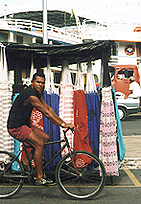

|  |  |  |  |  |
YOU CHOSE ...
'República Federativa do Brasil' is the South American country name derived from an exploitable wood 'pau-brasil.'
Fleet commander Pedro Álvares Cabral claimed this land, where an estimated 2-6 million indigenous people lived (today fewer than 200,000), for Portugal in 1500. Belongings from inhabitants date back more than 3500 years.
CONTINUE
|
 |
REPÚBLICA FEDERATIVA DO BRASIL TODAY*
flag - green with large yellow diamond in center bearing blue celestial globe with 27 white 5-pointed stars (one for each state and the Federal District) arranged in same pattern as night sky over Brazil; globe has white equatorial band with the motto ORDEM E PROGRESSO (Order and Progress) [flag info borrowed from cia site] Government - Federal republic President - Luiz Inácio Lula da Silva Area - 8,514,215 sq km (3,286,487 sq mi) Map - map by Lonely Planet Population - 175 million Capital city - Brasília People - 55% European descent, 38% mulatto, 6% African descent (according to the 1980 census). In reality, these figures are skewed by whiteness being equated with social stature in Brazil. Language - Portuguese |
GDP - US$650 billion
GDP per head - US$4060
Inflation - 8% (1999)
Major industries - Textiles, shoes, chemicals, lumber, iron ore, tin, steel, motor vehicles and parts, arms, soya beans, orange juice, beef, chicken, coffee, sugar
Major trading partners - EU, Central and South America, Asia, USA
history - history by Lonely Planet
*these details borrowed from Lonely Planet